관광통역안내사-1교시 (2013-09-14 기출문제)
1과목: 한국사
1. 우리나라 어느 지역을 발굴한 결과 다음과 같은 유물이 출토되었다. 어느 시대의 유적지인가?
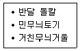
- 구석기시대
- 신석기시대
- 청동기시대
- 초기 철기시대
(정답률: 86%)

2. 청동기시대 사회상에 관한 설명으로 옳지 않은 것은?
- 사적 소유와 지배ㆍ피지배의 관계가 발생하였다.
- 약탈과 정복을 위한 집단 간의 전쟁이 잦았다.
- 농업생산력의 증가에 따라 잉여생산물이 나타났다.
- 혈연을 바탕으로 하는 씨족이 사회의 기본구성 단위였다.
(정답률: 91%)
3. 고대 국가들에 관한 설명으로 옳지 않은 것은?
- 고조선에는 8조법이 전하는데, 도둑질을 하면 사형에 처하였다.
- 고구려 사람들은 무예를 즐기고, 말을 타고 사냥하기를 좋아하였다.
- 백제는 농경에 적합하고 중국과 교류하기 유리한 한강 유역에 국가를 건설하였다.
- 신라에는 골품제라는 신분제도가 있어 관등 승진의 상한선이 골품에 따라 정해져 있었다.
(정답률: 76%)
4. 고조선에 관한 설명으로 옳지 않은 것은?
- 고조선의 세력 범위는 비파형 동검이 출토되는 지역과 깊은 관계가 있다.
- 고조선은 요령 지방을 중심으로 성장하여 점차 한반도까지 세력을 확장해 갔다.
- 단군왕검은 제정일치의 지배자로 하늘의 자손이라는 인식을 갖고 있었다.
- 활발한 정복 전쟁으로 낙랑군을 몰아냈다.
(정답률: 84%)
5. 통일신라 말기에 나타난 사회 현상을 모두 묶은 것은?
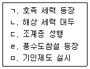
- ㄱ, ㄴ, ㄹ
- ㄱ, ㄷ, ㄹ
- ㄴ, ㄷ, ㅁ
- ㄴ, ㄹ, ㅁ
(정답률: 84%)
6. 다음 유물들을 제작한 나라에 관한 설명으로 옳은 것은?
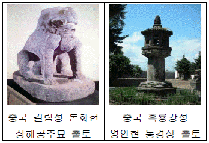
- 진한 지역의 사로국에서 시작하였으며, 고구려와 백제를 통합하였다.
- 대조영이 동모산에서 건국한 나라이며, 고구려 계승 의식을 가지고 있었다.
- 주몽이 부여에서 갈라져 나와 압록강 하류에 세운 나라이다.
- 후백제와 신라뿐만 아니라, 발해인까지 받아들여 실질적인 민족 통일을 이루었다.
(정답률: 83%)
7. 다음 여행 계획에서 강산이네 가족이 방문할 도시와 그 유적지를 연결한 것으로 옳지 않은 것은?
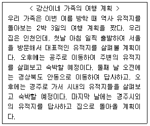
- 서울: 몽촌토성, 경복궁
- 공주: 부소산성, 정림사지
- 안동: 도산서원, 하회마을
- 경주: 안압지, 불국사
(정답률: 87%)
8. 밑줄 친 부분과 관련된 고대 국가에 관한 설명으로 옳지 않은 것은?
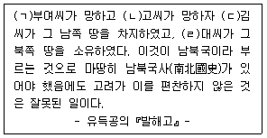
- (ㄱ): 마가, 우가, 저가, 구가 등의 관리가 있었다.
- (ㄴ): 평양에 도읍을 옮기고 중국의 남북조에 대해 등거리 외교정책을 전개하였다.
- (ㄷ): 국가 발전을 위한 인재를 양성하기 위하여 화랑도를 조직하였다.
- (ㄹ): 지방행정 조직으로 5경 15부 62주를 두었다.
(정답률: 52%)
9. 다음에 제시된 (가) ∼ (다) 불상의 제작 시기를 순서대로 바르게 나열한 것은?
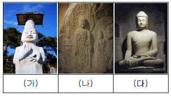
- (가) - (나) - (다)
- (나) - (가) - (다)
- (나) - (다) - (가)
- (다) - (나) - (가)
(정답률: 70%)
10. 다음과 같은 사실이 제시된 유물은?
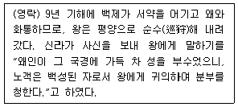
- 광개토 대왕릉비
- 중원 고구려비
- 단양 적성비
- 임신서기석
(정답률: 79%)
11. 고려시대 전시과에 관한 설명으로 옳지 않은 것은?
- 문무 관리에게 관등에 따라 전지와 시지를 지급하였다.
- 관직 복무와 직역의 대가로 받은 토지는 사망하거나 관직에서 물러날 때 국가에 반납하였다.
- 토지의 수조권이 아니라 토지 소유권을 지급하였다.
- 문종 때에는 현직 관리에게만 토지를 지급하는 경정전시과가 실시되었다.
(정답률: 78%)
12. 다음에서 공통적으로 설명하고 있는 섬은?
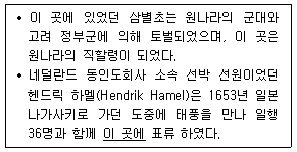
- 진도
- 거문도
- 제주도
- 거제도
(정답률: 79%)
13. 고려 초기 호족 세력을 통제하기 위한 정책으로 옳지 않은 것은?
- 사심관 제도
- 공음전
- 과거제도
- 노비안검법
(정답률: 67%)
14. 우리나라 인쇄 문화에 관한 설명으로 옳지 않은 것은?
- 무구정광대다라니경은 현존하는 가장 오래된 금속활자 인쇄물이다.
- 고려 시대 대장도감에서 만든 재조대장경은 현재 합천 해인사에 보관되어 있다.
- 청주 흥덕사에서 간행한 직지심체요절은 세계기록유산으로 등재되었다.
- 조선 태종 때에는 주자소를 설치하고 금속활자계미자를 주조하였다.
(정답률: 65%)
15. 조선 후기에 나타난 사회 문제와 그에 대한 정부의 개선책을 바르게 연결한 것은?
- 전세의 문란 – 대동법
- 토지의 겸병 - 균전제
- 환곡의 폐단 - 상평창
- 군역의 폐단 - 균역법
(정답률: 74%)
16. 다음 자료들과 관련된 왕의 업적으로 옳지 않은 것은?
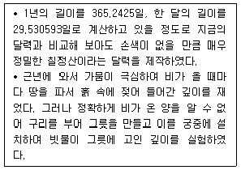
- 철령 이북의 땅을 회복하여 국토를 넓혔다.
- 충신, 효자, 열녀 등의 행적을 그림과 글로 엮은 삼강행실도를 간행하였다.
- 6조직계제를 대신해 의정부서사제를 시행하였다.
- 궁 안에 내불당을 짓고 월인천강지곡을 편찬하였다.
(정답률: 35%)
17. 다음 조선 초기의 정책이 공통적으로 지향하는 것은?
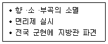
- 향촌 자치 강화
- 성리학적 질서 강화
- 중앙집권적 행정 체제 강화
- 사림 지배 체제 강화
(정답률: 71%)
18. 다음 사료와 관련된 전쟁이 국내외에 끼친 영향으로 옳지 않은 것은?
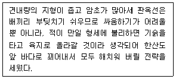
- 인구 감소
- 문화재 손실
- 여진 성장
- 북벌론 대두
(정답률: 74%)
19. 다음에서 설명하고 있는 문화재는?
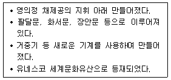
- 남한산성
- 정족산성
- 행주산성
- 수원화성
(정답률: 88%)
20. 다음과 같은 토지 개혁안이 공통적으로 지향 했던 목표는?
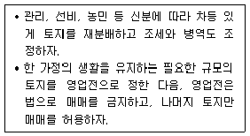
- 관리의 경제 기반 보장
- 자영농 육성을 통한 농민 생활 안정
- 지주 전호제 강화
- 공동 농장 제도 실현
(정답률: 72%)
21. 다음 소설이 서술하고 있는 시기에 관한 설명으로 옳지 않은 것은?
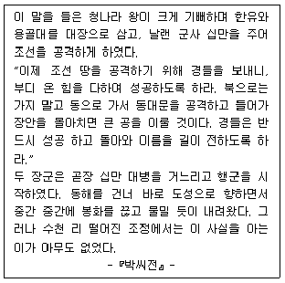
- 서인들이 정치를 주도하고 있었다.
- 친명배금(親明排金) 정책을 실시하고 있었다.
- 청의 침입에 대항하기 위하여 훈련도감을 설치하였다.
- 반정(反正)을 통해 인조가 집권하고 있었다.
(정답률: 73%)
22. 조선 후기 향촌 사회의 변화에 관한 설명으로 옳은 것은?
- 경제력을 갖춘 부농층이 향촌 사회에서 영향력을 강화하였다.
- 향촌 사회의 최고 지배층은 중인 계층이 주류를 이루고 있었다.
- 신앙 조직의 성격을 지닌 향도가 매향 활동을 주도하였다.
- 많은 속현에 감무를 파견하여 지방에 대한 통제력을 강화하였다.
(정답률: 63%)
23. 흥선대원군이 추진한 정치 개혁으로 옳지 않은것은?
- 600여 개의 서원을 철폐하고 47개소만을 남겼다.
- 종래 상민에게만 징수하던 군포를 양반에게도 징수하였다.
- 당파와 신분을 가리지 않고 능력에 따라 인재를 등용하였다.
- 왕권 강화를 위해 삼군부를 축소하고 비변사의 기능을 강화하였다.
(정답률: 92%)
24. 일제 강점기 해외 한인 사회에 관한 설명으로 옳지 않은 것은?
- 미주 동포들은 각종 의연금을 거두어 대한민국 임시정부에 송금하는 등 독립 운동을 지원하였다.
- 러시아 연해주의 동포들은 1920년대 일제의 탄압을 피해 중앙아시아로 이주하였다.
- 일본에서는 관동대지진 때에 조작된 유언비어로 많은 동포들이 학살당하였다.
- 간도로 이주한 동포들은 황무지를 개간하고 벼농사를 지었다.
(정답률: 73%)
25. 다음에서 설명하고 있는 인물이 살았던 시기에 발생한 사건들을 모두 고른 것은?
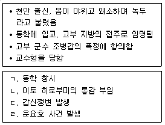
- ㄱ, ㄴ, ㄷ
- ㄱ, ㄷ, ㄹ
- ㄴ, ㄷ, ㄹ
- ㄱ, ㄴ, ㄷ, ㄹ
(정답률: 77%)
2과목: 관광자원해설
26. 지리산 국립공원이 위치하고 있는 행정구역이 아닌 곳은?
- 전라북도
- 전라남도
- 경상북도
- 경상남도
(정답률: 41%)
27. 제주도에 위치한 동굴관광자원이 아닌 것은?
- 만장굴
- 협재굴
- 김녕굴
- 고수동굴
(정답률: 83%)
28. 다음 중 국립박물관이 아닌 것은?
- 경주박물관
- 제주도민속자연사박물관
- 대구박물관
- 부여박물관
(정답률: 60%)
29. 지역과 특산물의 연결이 옳은 것은?
- 흑산도 - 명태
- 한산 - 모시
- 연평도 - 김
- 금산 - 도자기
(정답률: 93%)
30. 우리나라 전통 민속주 중 무형문화재가 아닌 것은?
- 경주 교동 법주
- 안동 소주
- 제주 막걸리
- 한산 소곡주
(정답률: 72%)
31. 안동 하회마을에 관한 설명으로 옳지 않은 것은?
- 보물 양진당과 충효당이 있다.
- 하회란 물이 돌아서 흘러간다는 의미이다.
- 류성룡 형제의 유적이 마을의 중추를 이루고 있다.
- 안강평야의 동쪽 구릉지에 위치하고 있다.
(정답률: 58%)
32. 서해안에 위치한 해수욕장이 아닌 것은?
- 몽산포 해수욕장
- 무창포 해수욕장
- 망양정 해수욕장
- 변산 해수욕장
(정답률: 61%)
33. 호수 관광자원 중 인공호수는?
- 시화호
- 경포호
- 송지호
- 영랑호
(정답률: 82%)
34. 관광자원 분류 중 무형 관광자원인 것은?
- 미술
- 언어
- 건축물
- 휴양지
(정답률: 92%)
35. 정월대보름에 행해지는 민속놀이가 아닌 것은?
- 줄다리기
- 지신밟기
- 백중놀이
- 관원놀음
(정답률: 64%)
36. 다음 중 우리나라의 천연기념물은?
- 진도 진돗개
- 영월 선돌
- 제주 서귀포 산방산
- 안동 만휴정 원림
(정답률: 88%)
37. 왕릉과 소재지의 연결이 옳지 않은 것은?
- 헌인릉 - 서울특별시
- 동구릉 - 경기도 구리시
- 장릉(단종) - 강원도 영월군
- 영릉(세종) - 경기도 고양시
(정답률: 66%)
38. 다음 중 2013년 세계기록유산에 새롭게 등재된 것만 고른 것은?
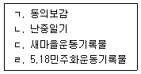
- ㄱ, ㄴ
- ㄱ, ㄹ
- ㄴ, ㄷ
- ㄷ, ㄹ
(정답률: 36%)
39. 조선시대 도자기의 특징으로 옳지 않은 것은?
- 왕실에 백자를 공급하기 위해 사옹원을 설치하였다.
- 고려시대에 비해 실용성이 강조되었다.
- 임진왜란이후 분청사기는 쇠퇴하였다.
- 주류를 이루는 것은 청자이다.
(정답률: 87%)
40. 우리나라의 세계문화유산 지정순서로 올바른 것은?
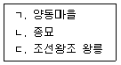
- ㄱ - ㄴ - ㄷ
- ㄱ - ㄷ - ㄴ
- ㄴ - ㄷ - ㄱ
- ㄷ - ㄴ - ㄱ
(정답률: 80%)
41. 단군왕검이 민족 만대의 영화와 발전을 위하여 춘추로 하늘에 제사를 올리던 제단은?
- 참성단
- 선농단
- 사직단
- 종묘
(정답률: 52%)
42. 다른 유적에서는 발견되지 않은 특이한 유물이 발견되거나, 다른 무덤과 차별화되는 특징을 가진 무덤은?
- 묘(墓)
- 총(塚)
- 능(陵)
- 분(墳)
(정답률: 78%)
43. 하천을 이용하거나 성벽의 주변에 인공적으로도랑을 파서 만든 성의 방어물은?
- 성문(城門)
- 옹성(甕城)
- 돈대(墩臺)
- 해자(垓字)
(정답률: 83%)
44. 관현악 반주에 맞추어 시조시를 노래하는 중요무형문화재 제30호인 한국의 전통 성악곡은?
- 제례악
- 가곡
- 민요
- 농악
(정답률: 72%)
45. 불교 재의식 때 추는 춤이 아닌 것은?
- 살풀이춤
- 나비춤
- 바라춤
- 법고춤
(정답률: 81%)
46. 우리나라의 세계유산 중 무형유산으로 등록 되지 않은 것은?
- 아리랑
- 택견
- 줄타기
- 씨름
(정답률: 63%)
47. 우리나라 전통 건축양식 중 처마 끝의 하중을 기둥에 전달하고 장식적 의장을 더해주는 부재는?
- 공포
- 기단
- 대들보
- 단청
(정답률: 63%)
48. 다음 중 은산별신제의 설명으로 옳지 않은것은?
- 3년에 1번씩 음력 1월 또는 2월에 열린다.
- 중요무형문화재 제1호로 지정되어 있다.
- 충청남도 부여군에서 열린다.
- 마을사람들은 장군과 병사들을 위로한다.
(정답률: 73%)
49. 조선시대 궁궐의 명칭 설명으로 옳지 않은 것은?
- 정궁 - 왕의 침전
- 서궁 - 대비의 침전
- 동궁 - 후궁의 침전
- 중궁 - 왕비의 침전
(정답률: 71%)
50. 다음 석탑의 구성요소에서 가장 꼭대기에 위치 하는 것은?
- 찰주
- 보륜
- 복발
- 옥개석
(정답률: 62%)